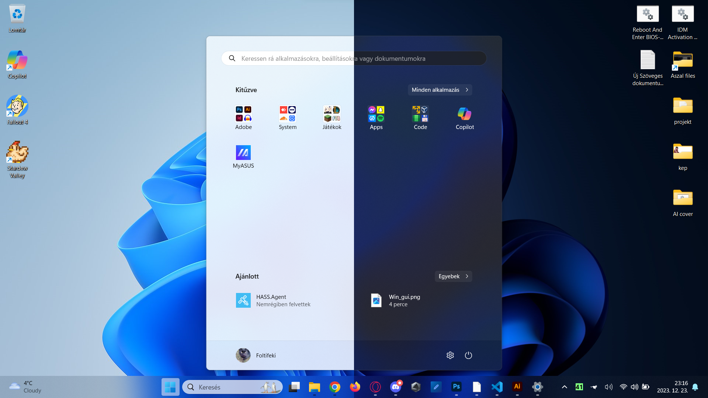

Grafikus felhasználói felület (GUI)
A Windows grafikus felhasználói felülete (GUI) lehetővé teszi a felhasználók számára, hogy egyszerűen és intuitív módon használják a számítógépüket. A GUI elemei, például az ikonok, a menük és a párbeszédpanelek segítenek a felhasználóknak abban, hogy könnyen megtalálják és elindítsák a kívánt alkalmazásokat és funkciókat.

Alkalmazások
A Windows számos különböző alkalmazást támogat, beleértve az irodai alkalmazásokat, a játékokat, a szórakoztató alkalmazásokat és a fejlesztői eszközöket. A felhasználók könnyen találhatnak olyan alkalmazásokat, amelyek megfelelnek az igényeiknek.
Biztonság
A Microsoft rendszeresen kiad biztonsági frissítéseket a Windows operációs rendszerhez. Ezek a frissítések javítják a rendszer biztonságát, és védelmet nyújtanak a vírusok és a kártékony szoftverek ellen. A felhasználóknak fontos, hogy rendszeresen telepítsenek biztonsági frissítéseket, hogy számítógépük biztonságban legyen.
Teljesítmény
A Windows operációs rendszerek általában erőforrás-igényesebbek, mint a Linux disztribúciók. Ez azt jelenti, hogy a Windows-t futtató számítógépeknek több memóriára és processzorteljesítményre van szükségük, mint a Linuxot futtató számítógépeknek.
Hardver támogatás
A Windows széles körben elterjedt, és számos különböző hardvert támogat. A felhasználók könnyen találhatnak olyan számítógépet, amely megfelel az igényeiknek és kompatibilis a Windows-szal.
Kompatibilitás
A Windows számos különböző alkalmazást és hardvert támogat. A felhasználók könnyen találhatnak olyan alkalmazásokat és hardvereket, amelyek megfelelnek az igényeiknek és kompatibilisek a Windows-szal.
Támogatás
A Microsoft széles körű támogatást nyújt a Windows operációs rendszerhez. A felhasználók könnyen találhatnak segítséget a Microsoft weboldalain, a támogatási fórumokon vagy a szakértőktől.